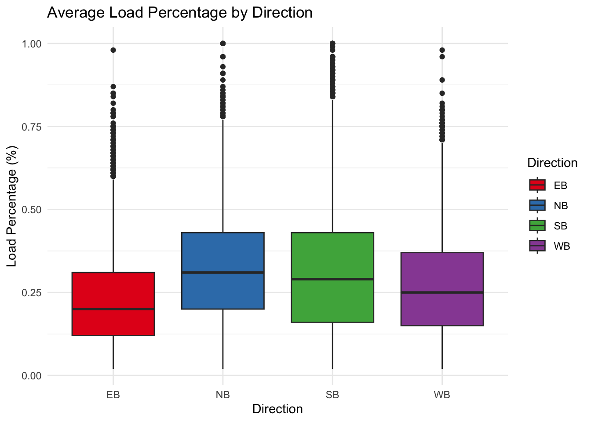
3 Results
3.1 Passenger Load/Trips Analysis
3.1.1 Boxplot: Load Percentage by Direction
3.1.1.1 Comment:
Median Load Percentage: The median load percentage seems relatively different. NB and SB are the first 2 largest Load Percentage while WB and EB are 2 smalless, Which indicates North and South may stand more passengers while the other 2 direction have lower utilization.
Outliers: All directions seems a lot of outliers, which are not taken into calculation consideration, I think we could further explore those and remove potential outliers which may influence our results.
Variation: By seeing the interquantile of those directions, we can see that SB direction have more variation with respect to the load percentage, which indicates south direction should be explored further.
3.1.2 Horizontal barchart: Avg. Load Percentage per Borough
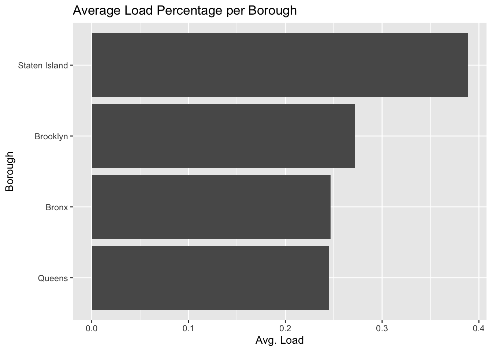
3.1.3 Horizontal barchart: Avg. Trips with APC per Borough
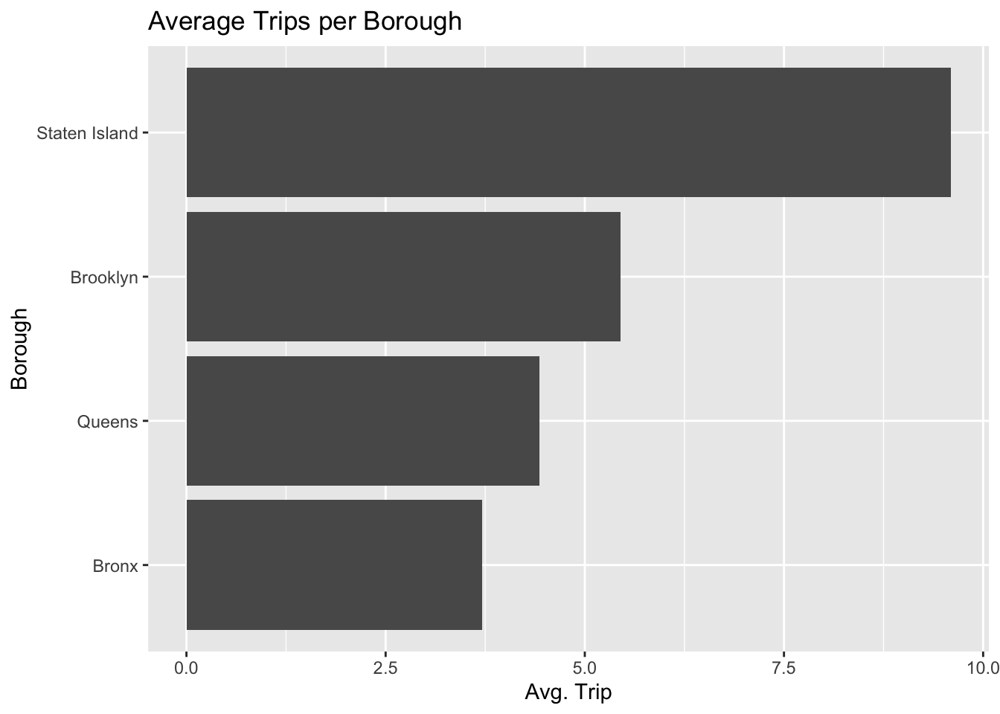
3.1.3.1 Comment:
Average Trip: Staten Island stands out with a significantly higher average number of trips. This could indicate a higher frequency of trips or that fewer routes are being used more frequently. Therefore, we should combine with Average load to see it’s the bad utilization or we should actually increase more routes.
3.1.4 Cleveland plot: Avg. Load Percentage per Route
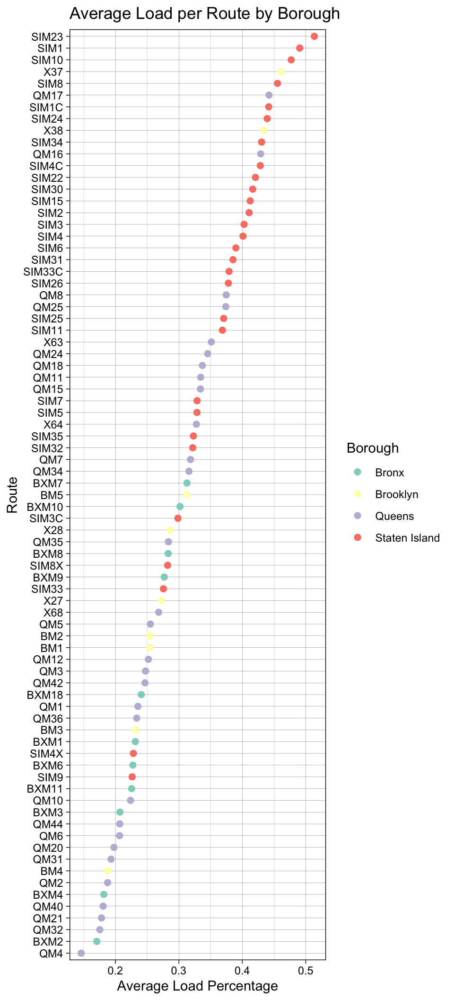
3.1.4.1 Comment:
Route Load Variation: There is a wide variation in the average load percentages across different routes. Some routes have a low average load, while others are approaching 50%, which indicates differences in route popularity, capacity, or possibly the time of day the data was collected.
Comparison Across Boroughs: It appears that Staten Island has several routes with higher load percentages, while routes in Queens have a lower average load. This could reflect differences in transportation needs or service levels across boroughs.
3.2 Time-based Trends
3.2.1 Line plot: Avg. Load Percentage of NYC Bus by Hour
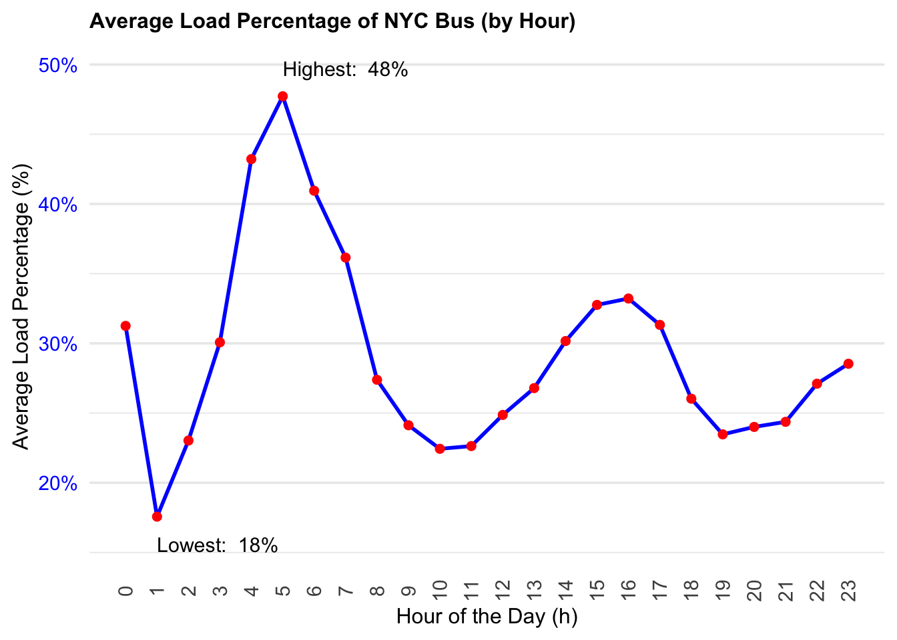
3.2.1.1 Comment:
Peak Times: There is a clear peak in average load percentage around the 8th hour marked as the highest load at 48%, and another small peak around 16-17th hour. This likely corresponds to morning rush hour, a common time for people to commute to work or school, and the night rush hour, a common time for going home after work.
Lowest Load: The graph points out the lowest load percentage at 18%, which occurs around the 4th hour, likely in the very early morning when the least number of people are traveling.
Nighttime Load: There is an uptick in load percentage later in the evening, after the 20th hour, which could correspond to people returning home from late shifts or social activities.
3.2.2 Barchart: Avg. Trips with APC of NYC Bus by Hour
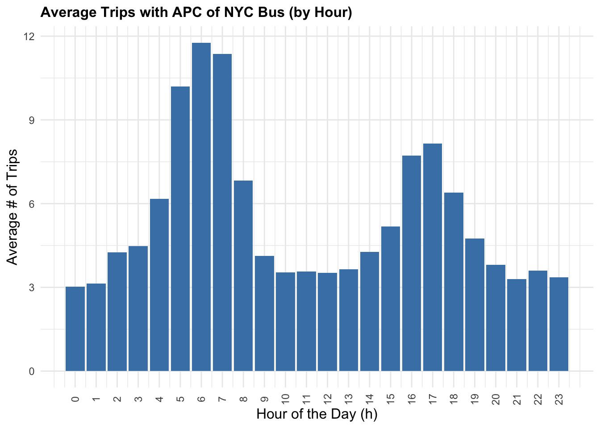
3.2.2.1 Comment:
Peak Hours: The chart shows distinct peaks in the number of trips during certain hours of the day. The most prominent peak appears to be in the morning hours, around 8 AM, suggesting a morning rush hour with the highest average number of trips. There’s another less pronounced peak in the late afternoon or early evening, possibly indicating an evening rush hour.
Off-Peak Variation: Outside of the peak hours, the number of trips decreases but fluctuates throughout the day. Midday hours show a moderate level of trips, which could be due to people traveling for non-work related reasons or staggered work schedules.
Nighttime Service: There’s a noticeable drop in the average number of trips late at night, reaching the lowest point in the early morning hours around 4 AM to 5 AM, which is expected as this is typically outside of standard commuting times.
3.2.3 Ridgeline plot: Load Percentage Distribution by Day Type
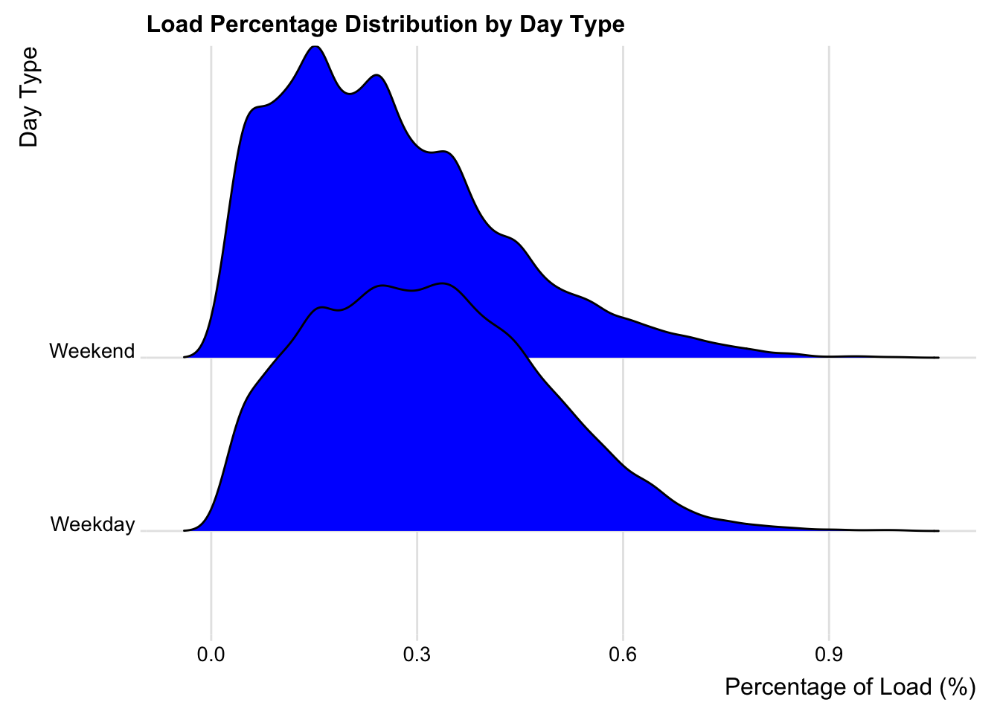
3.2.3.1 Comment:
Distribution Shape: The distribution of load percentages on weekdays has a wider spread than on weekends, suggesting there is more variation in bus load percentages during weekdays.
Peaks and Load: There appear to be multiple peaks for both weekdays and weekends. This could indicate that there are specific times during the day when buses are consistently more or less loaded. The highest peak on weekdays suggests a time when buses are most consistently at a similar load percentage, possibly during rush hours.
Weekday vs. Weekend Trends: The weekday distribution has a higher peak, which might indicate a more consistent pattern of high load percentages, likely associated with commuter traffic. The weekend distribution is broader with a less pronounced peak, suggesting a more varied load percentage, which could be due to a more irregular or leisure-based travel pattern.
Bus Utilization: The graph could suggest that buses are more heavily utilized during weekdays as compared to weekends, which would align with typical workweek patterns.
3.2.4 Ridgeline plot: Trip with APC Distribution by Day Type
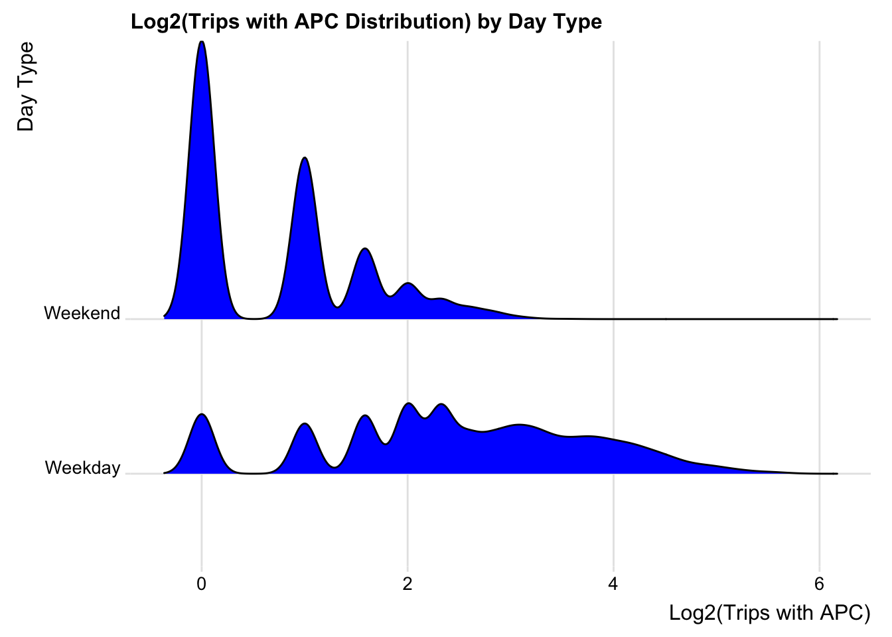
3.2.4.1 Comment:
Weekend Peaks: The distribution for weekends has pronounced peaks, especially the very sharp peak at the lower end of the x-axis, indicating that there are many instances of a specific, lower number of trips (possibly single or very few trips on certain routes). This suggests that there’s less variability in the number of trips on weekends, with certain trip counts being far more common than others.
Weekday Distribution: The weekday distribution is smoother and more spread out, which indicates a greater variability in trip counts. This could be due to a more uniform distribution of commuter travel spread throughout the workday.
Use of Logarithmic Scale: By using a logarithmic scale (log2), the graph allows for easier visualization and comparison of data across a wide range of values. It’s especially useful when dealing with exponential growth or large disparities in data.
Low Trip Counts: The first peak in the weekend distribution suggests that the lowest trip counts are more common on weekends than on weekdays. This could be due to reduced service schedules or lower demand.
3.3 Multiple variable Interactions
3.3.1 Barcharts by Borough: Avg. Load Percentage with respect to Hour(Each Borough)
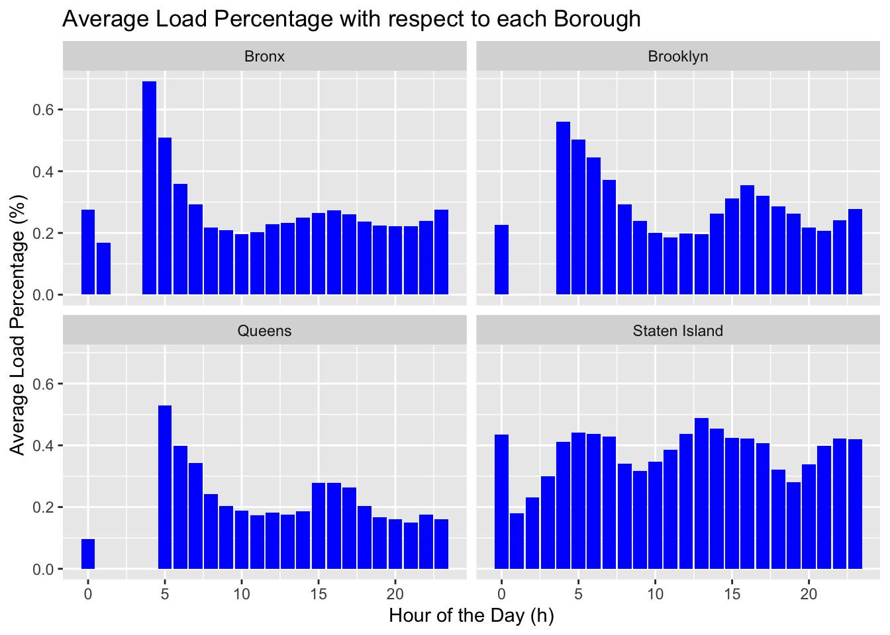
3.3.1.1 Comment:
Variability: Each borough exhibits variability in load percentages throughout the day. This could be reflective of different travel patterns, with peaks likely corresponding to rush hours.
Peak Times: Bronx: Shows pronounced peaks, which could suggest rush hours are more pronounced in the Bronx, with higher bus usage during these times.
Brooklyn: Exhibits a more even distribution with less pronounced peaks, possibly indicating a more steady usage of buses throughout the day.
Queens: Similar to the Bronx, there are distinct peaks that may correspond to rush hours.
Staten Island: Has a more varied pattern with multiple peaks, suggesting several busy periods throughout the day.
3.3.2 Scatterplot: Correlation between Load Percentage and Trips
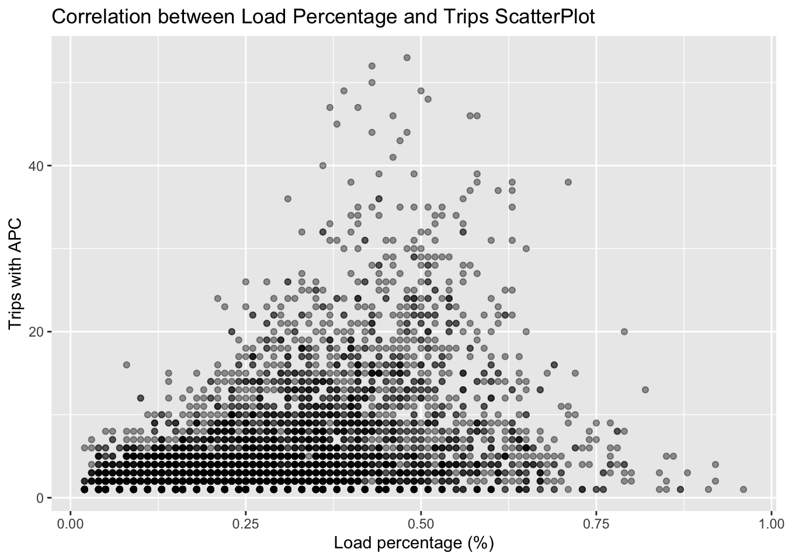
3.3.2.1 Comment:
Data Distribution: A scatter plot with a lot of data points clustered at the lower end of the load percentage axis might suggest that most bus trips have a low to moderate load percentage. But the correlation relationship is not so apparent.
Outliers: There are points scattered more widely along the y-axis at higher load percentages, these could be considered outliers indicating occasional trips with significantly higher load percentages.
3.3.3 Stacked bar chart: Direction composition of each borough
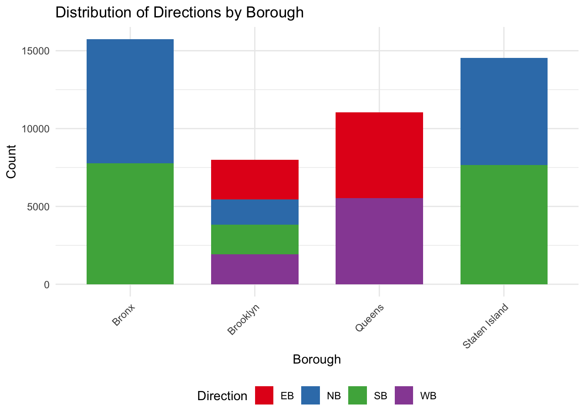
3.3.3.1 Comment:
Graph distribution: From the graph, we know that only Brooklyn has 4 directions of routes, while Bronx and Staten Island have only North and South direction. Queens has only East and West. According to previous graphs, it indicates that North and South have higher load percentages. This is fit for that Bronx and Staten Island have higher load percentage while Queens has lower percentage.
3.4 Non-technical summary:
Busyness by Time and Place: Some graphs showed how busy the buses are at different times of the day in various boroughs. For example, there are times in the morning and evening when the buses are particularly full, likely when people are going to or from work.
Direction Matters: Other charts indicated that in some boroughs, buses going in certain directions are busier than others. This might tell us where more people work or live, or maybe where popular destinations are.
Weekdays vs. Weekends: There’s also a difference between weekdays and weekends. Buses are consistently busier on weekdays, probably due to people’s work schedules, while weekends show more varied bus usage, reflecting more leisure or irregular travel.
Different Boroughs, Different Patterns: We know that Staten Island is the Borough with highest load percentage and Trips with APC. While Bronx also have higher Load percentage, it have fewer Trips with APC, which indicates it may not utilize the transportation fully. Queens have the least load percentage, which means we may need to give less resources to Queens, and add resources to Staten Island.
Relationship: Because there’s not clear relationship between Load percentage and Trips with APC. Therefore, we should combine both to answer the question of Route optimization and further policy and planning.
3.1.2.1 Comment:
Average Load: Staten Island shows the highest average load percentage. This could indicate a higher utilization of the transportation system, or possibly fewer transportation options leading to more crowded buses or trains.